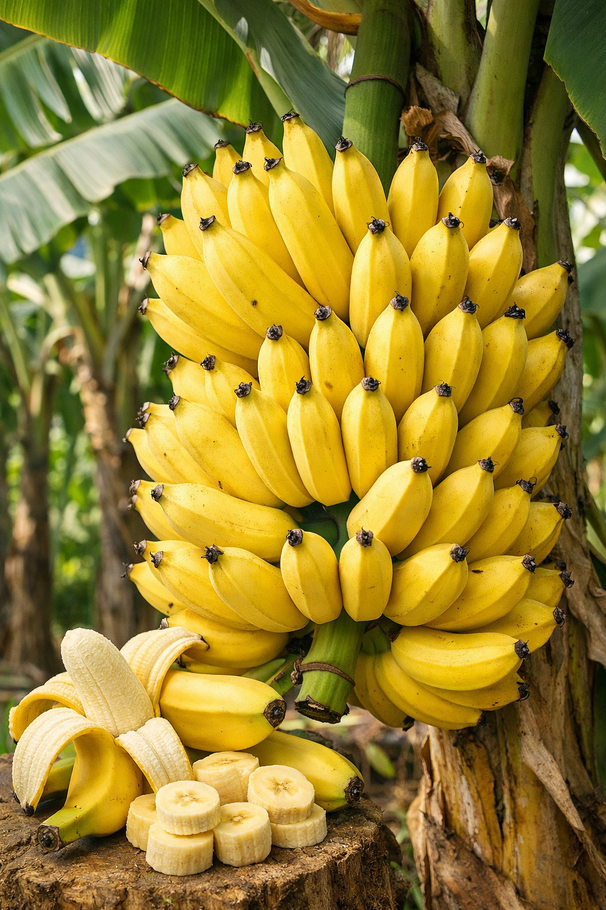
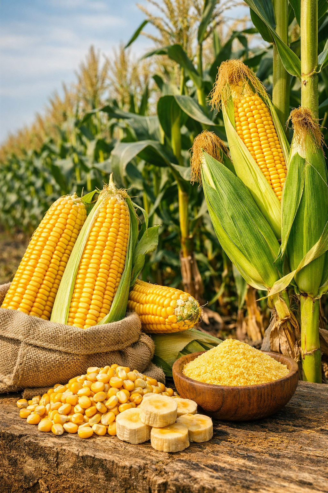

Tipo de cultivo
🍌 PLÁTANO

El plátano es un cultivo esencial en la alimentación y economía rural, con alto rendimiento y gran demanda.
🌽 MAÍZ

El maíz es un cereal versátil, base de la dieta y clave en la producción agroindustrial y alimentaria.
☕ CAFÉ

El café colombiano es reconocido mundialmente por su calidad y tradición, sustento de miles de familias campesinas.
🍓 FRUTAS

Las frutas aportan diversidad, nutrición y valor económico, siendo parte vital de la agricultura sostenible.
🌱 CULTIVOS MIXTOS

La combinación de diferentes cultivos fortalece la seguridad alimentaria y mejora el aprovechamiento del suelo.
Galería de fotos
Aquí puedes ver imágenes de cultivos, frutas y productos del campo.
Historias
Todos nuestros cultivos son sembrados con amor por manos de agricultores. Cada producto representa esfuerzo, tradición, aprendizaje y compromiso con el desarrollo del campo.
Contacto
Correo: feria@agro.com
Teléfono: 321 612 97 52
Formulario de registro
Chat IA Agropecuario
Haz preguntas sobre café, plátano, maíz, frutas, suelos, abonos, plagas, enfermedades, cosecha, poscosecha o temas agropecuarios.
Nota: las respuestas son educativas. Para aplicar químicos, tratar enfermedades o tomar decisiones técnicas importantes, consulta a un técnico agrícola local.